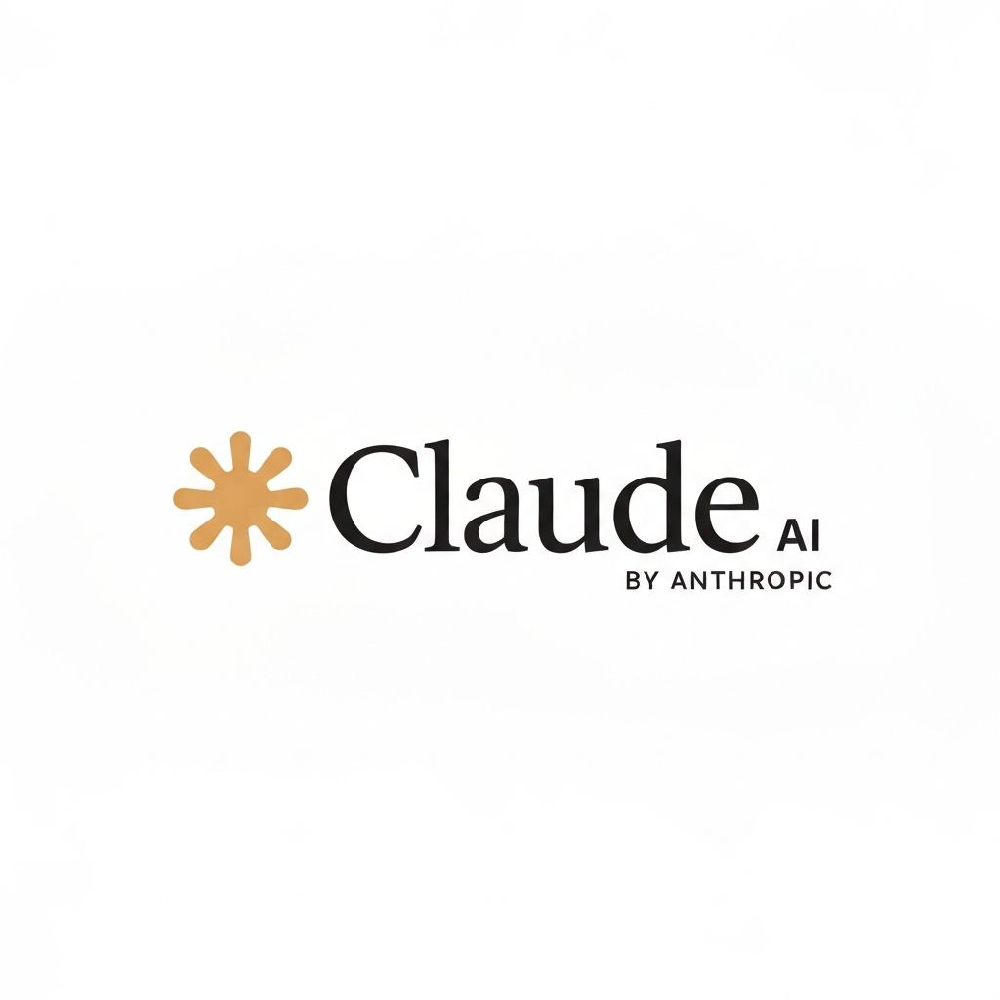

阿里發布 Qwen4-Max：任務成本大降六成
（後續）阿里巴巴正式發布旗艦模型 Qwen4-Max，其正式版已上線 QwenCloud API。該模型具備原生視覺能力與百萬級上下文窗口，總參數達 2.4T，每 token 僅需激活 710 億參數。相較於前代 Qwen3.8-Max，單任務成本大幅降低約 60%，國際站定價為每百萬 tokens 輸入 1.50 美元、輸出 4.50 美元。在基準測試中，其 Terminal-Bench 4.0 得分從上代的 38.9 躍升至 48.5，並在 Arena.ai 初評奪得中國第一與全球第五。官方同時宣布，小型 Qwen4 權重後續亦將走向開源。